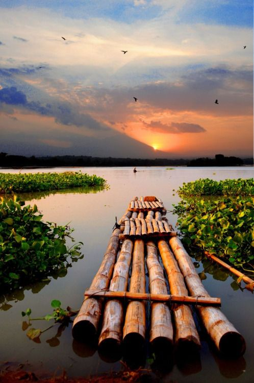
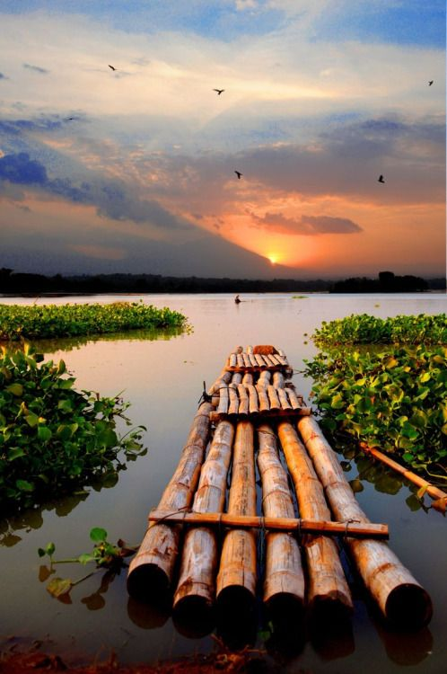

" Amar Porichoy"
Sayad Shamshul Haque (27 Dec,1935 - 27 Sep 2016)
*Father's name:Sayed Shiddik Hossain
*Mother's name:Sayeda Halima Khatun
Student life- Dhaka Collagate school, Jagganath College (intermidiate)
Work life- Journalist and Bangla literature
Highlighted works- Akoda ak rajjae, Ogni o joler kobita, Rajnoitik kobita.
Nobles:Akoda ak rajjae, Boishakhe Rochito pongktimala, Ogni o joler kobita, Rajnoitik kobita
stories:Shit bikale, roktogolap, Anonder mrittu
Uponnash:Bristy o bidrohigon
Natok:Payer aoaj poua jai, Nuruldiner sarajibon, Ersha
Shishutos: Shimanter shinghashon, Alu boro hoy, Hodsoner Bonduk
 
